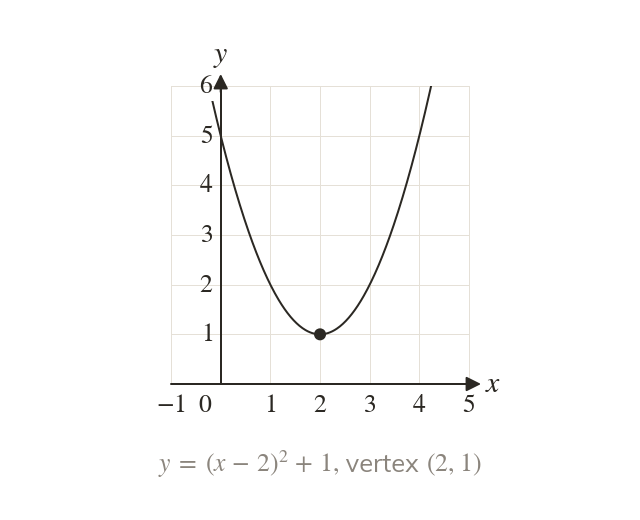
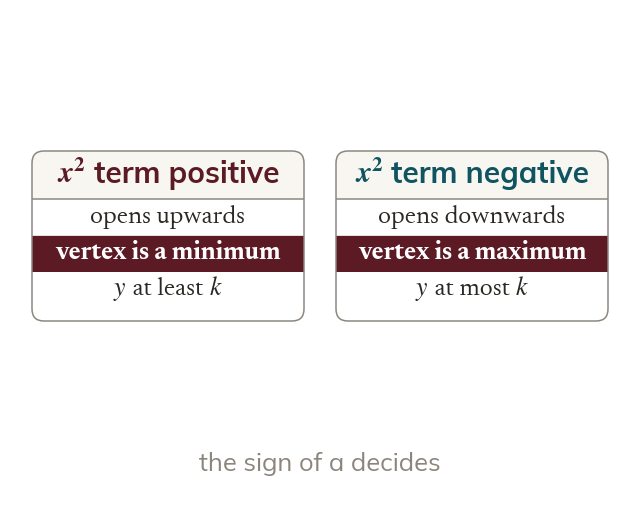
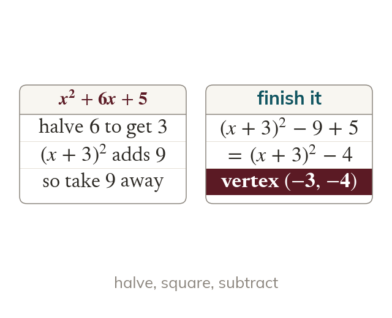
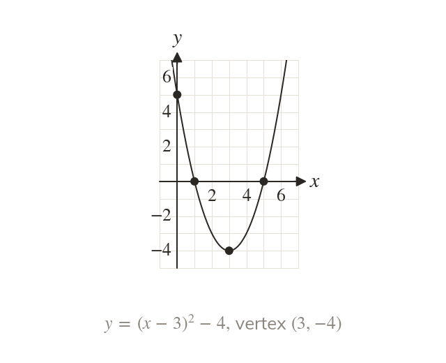
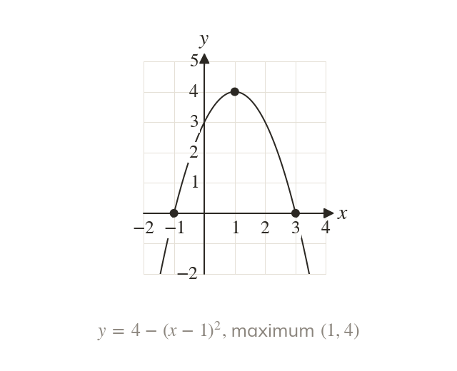
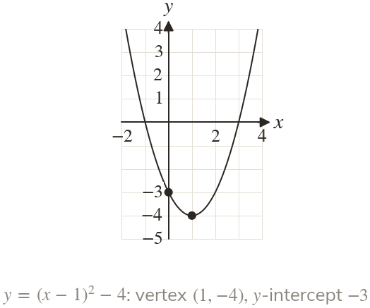
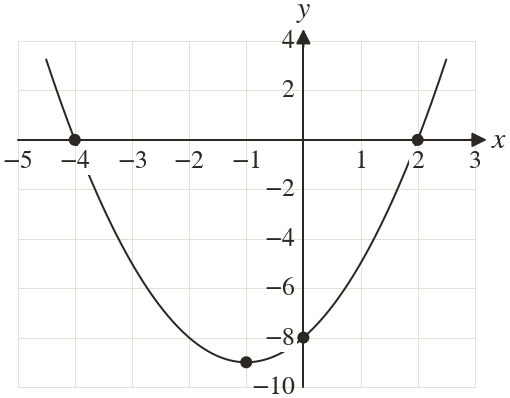

The vertex form
In the vertex is The line of symmetry is The bracket shifts the graph right by
When a quadratic is written as its vertex is at and its line of symmetry is The bracket shifts the graph right by and shifts it up.
A quadratic graph is fixed by where its vertex is and which way it opens, and completing the square hands you the vertex directly, so this lesson turns an algebra skill from Chapter into a picture you can sketch in a minute.
Work down the page at your own pace. Write every answer in your book first, then click to check it.
Read each card, then follow the worked examples one step at a time.

In the vertex is The line of symmetry is The bracket shifts the graph right by

The sign of the term decides the vertex type. A positive term opens upwards to a minimum. A negative term opens downwards to a maximum.

Completing the square starts by halving b. The bracket adds that half squared. So it has to be taken away again.
Pick an answer. If it's wrong, the feedback tells you which mistake it was.
Section Graphs of quadratic functions Exercise questions that match equations to sketches and find the vertex and line of symmetry by completing the square.
Read each card, then follow the worked examples one step at a time.

The y-intercept comes from putting
The x-intercepts come from putting and solving.

A negative term turns the curve upside down. Its vertex is then the highest point.

Pick an answer. If it's wrong, the feedback tells you which mistake it was.

Section Graphs of quadratic functions Exercise questions that find the intercepts, and sketch quadratics with the vertex and crossing points marked.
Finished? Next lesson: 3.8-3.9 Inverse and Exponential Functions.
For each skill, tap the one that is true for you today. Your Revise pages start with anything you mark Not yet.
Your ratings are saved on this device only.
Log in, then search for a code to practise that skill.